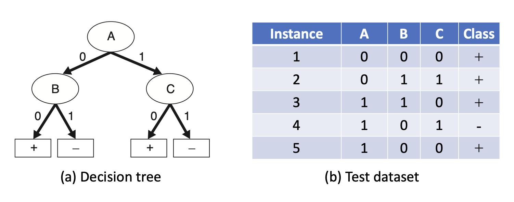
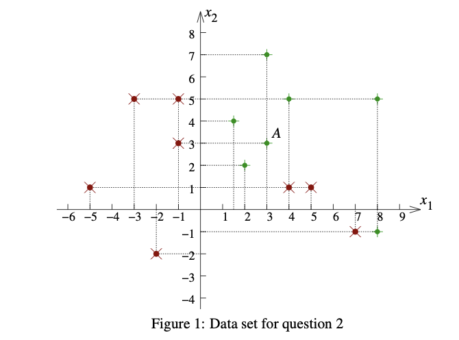
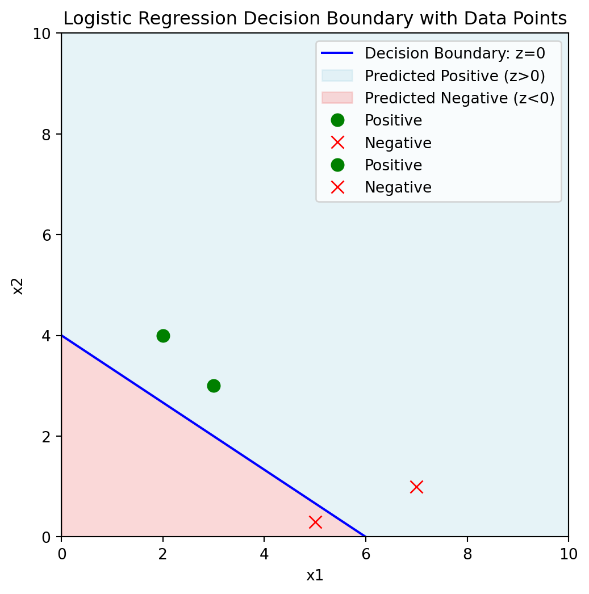
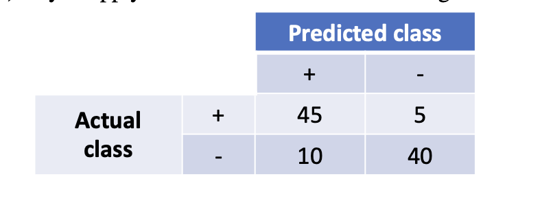
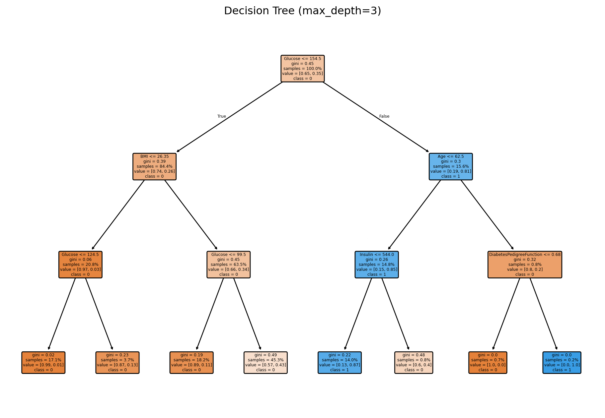
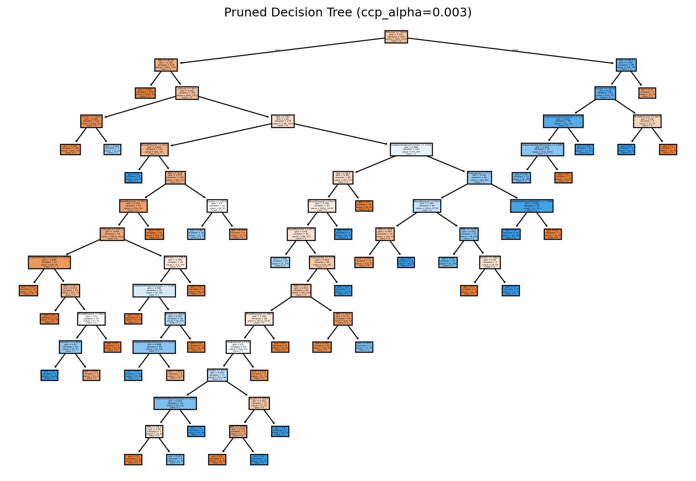

Data processing, Model overfitting, Validation and Evaluation
Problem 1
Problem 1a
What is the difference between dimensional reduction and feature subset selection?
Dimensionality reduction
This technique transforms the original high-dimensional feature space into a lower-dimensional space. It does this by creating new features that are combinations of the original features that captures most of the variance . For example, Principal Component Analysis (PCA) is a common method used for dimensionality reduction.
Feature subset selection
For this approach it selects a subset of the original features without transforming them. The goal is to identify and retain the most relevant and informative features while discarding the less important ones. This can be done using methods like forward selection, backward elimination, or recursive feature elimination.
The main difference is that dimensionality reduction creates new features, while feature subset selection retains the original features.
Problem 1b
What are the possible reasons for model overfitting?
Complex Models: Using a model that is too complex for the amount of data available can lead to overfitting. For example, a deep neural network with many layers may learn to memorize the training data instead of generalizing from it.
Insufficient Data: When the training dataset is too small, the model may learn noise and outliers instead of the underlying patterns.
Lack of Regularization: Regularization techniques (like L1 or L2 regularization) help to penalize complex models. Without them, the model may fit the training data too closely.
Noisy Data: If the training data contains a lot of noise or outliers, the model may learn to fit these anomalies rather than the true underlying patterns.
Inadequate Cross-Validation: If the model is not properly validated using techniques like k-fold cross-validation, it may perform well on the training data but poorly on unseen data.
Problem 1c
What can you do to avoid overfitting? Elaborate you answers with Decision Trees, and Logistic Regression.
Decision Trees: To avoid overfitting in decision trees, you can use techniques such as: Pruning1, setting a maximum depth2, requiring a minimum number of samples per leaf, or enforcing a minimum impurity decrease to restrict tree complexity.
Logistic Regression: To avoid overfitting in logistic regression, you can:
Use regularization techniques such as L1 (Lasso) or L2 (Ridge) regularization to penalize large coefficients.
Feature selection to remove irrelevant or redundant features.
Cross-validation to ensure that the model generalizes well to unseen data.
Problem 1d
What’s the difference between validation dataset and test dataset?
Validation Dataset: This dataset is used during the training process to tune the model’s hyperparameters and make decisions about the model architecture. It helps in selecting the best model among different candidates. The validation set is not used for training but is used to evaluate the model’s performance during training.
Test Dataset: This dataset is used to evaluate the final performance of the model after it has been trained and validated. It provides an unbiased estimate of the model’s performance on unseen data. The test set should not be used in any way during the training or validation process.
Problem 1e
Describe 10 fold-cross validation. What’s the advantage(s) and disadvantage(s) as compared to one train-test split in model evolution?
10-Fold Cross-Validation: In this method, the dataset is divided into 10 equal parts (or folds). The model is trained on 9 folds and validated on the remaining fold. This process is repeated 10 times, with each fold being used as the validation set once. The final performance metric is usually the average of the performance across all 10 folds.
Advantages: 1. More Reliable Estimate: It provides a more reliable estimate of the model’s performance since it uses multiple train-test splits. 2. Better Use of Data: All data points are used for both training and validation, which is especially useful when the dataset is small. 3. Reduces Variance: It reduces the variance associated with a single train-test split, making the performance estimate more stable.
Disadvantages: 1. Computationally Expensive: It requires more computational resources and time since the model is trained multiple times. 2. Complexity: It adds complexity to the model evaluation process, making it harder to implement and interpret.
Problem 1f
Why can accuracy be a bad metric to evaluate your classifier? What other metrics you can use?
Issues with Accuracy
Accuracy can be misleading, especially in imbalanced datasets where one class significantly outnumbers the other. For example, if 95% of the data belongs to one class, a model that predicts the majority class will have 95% accuracy but will not be useful for predicting the minority class. It doesnt show how many false positives or false negatives there are. Other Metrics: 1. Precision: Measures the proportion of true positive predictions among all positive predictions. It is useful when the cost of false positives is high. 2. Recall (Sensitivity): Measures the proportion of true positive predictions among all actual positive instances. It is useful when the cost of false negatives is high. 3. F1 Score: The harmonic mean of precision and recall, providing a balance between the two metrics. 4. ROC-AUC: The area under the receiver operating characteristic curve, which provides a measure of the model’s ability to distinguish between classes.
Problem 2 Decision Trees
Consider the training examples shown bellow for a binary classification problem.
Movie ID
Format
Movie Category
Class
1
DVD
Entertainment
C0
2
DVD
Comedy
C0
3
DVD
Documentaries
C0
4
DVD
Comedy
C0
5
DVD
Comedy
C0
6
DVD
Comedy
C0
7
Online
Comedy
C0
8
Online
Comedy
C0
9
Online
Comedy
C0
10
Online
Documentaries
C0
11
DVD
Comedy
C1
12
DVD
Entertainment
C1
13
Online
Entertainment
C1
14
Online
Documentaries
C1
15
Online
Documentaries
C1
16
Online
Documentaries
C1
17
Online
Documentaries
C1
18
Online
Entertainment
C1
19
Online
Documentaries
C1
20
Online
Documentaries
C1
Problem 2a Compute the Entropy for the Movie ID attribute.
where \(p_i(t)\) is the proportion of the \(i\)-th class in the node \(t\) and \(C\) is the number of classes. Below we define a helper function in Python and compute the overall entropy.
import numpy as npdef entropy(counts): counts = np.array(counts) total = counts.sum() probabilities = counts / total probabilities = probabilities[probabilities >0] # avoid log2(0)return-np.sum(probabilities * np.log2(probabilities))# Overall dataset: 10 of C0 and 10 of C1overall_entropy = entropy([10, 10])print("Overall Entropy:", overall_entropy)
Overall Entropy: 1.0
In this case, we have two classes: \(C0\) and \(C1\). The entropy for the Movie ID attribute can be calculated as follows:
movieid_entropy =0print("Movie ID Entropy:", movieid_entropy)
Movie ID Entropy: 0
Each movie ID is unique, so the entropy for the Movie ID attribute is 0.
Problem 2b Compute the Entropy for the Format attribute.
We calculate the entropy for each group and then compute the weighted average to get the overall entropy.
# Entropy for DVD groupdvd_entropy = entropy([6, 2])# Entropy for Online grouponline_entropy = entropy([4, 8])# Weighted entropy for Format attributeformat_entropy = (8/20) * dvd_entropy + (12/20) * online_entropyprint("DVD Entropy:", dvd_entropy)print("Online Entropy:", online_entropy)print("Format Weighted Entropy:", format_entropy)
DVD Entropy: 0.8112781244591328
Online Entropy: 0.9182958340544896
Format Weighted Entropy: 0.8754887502163469
Problem 2c Compute the Entropy for the Movie Category attribute using multiway split.
# Entropy for Entertainmententertainment_entropy = entropy([2, 2]) # 4 Examples of it# Entropy for Comedycomedy_entropy = entropy([6, 1]) # 7 Examples of it# Entropy for Documentariesdocumentaries_entropy = entropy([2, 7]) # 9 Examples of it# Weighted entropy for Movie Category attributemovie_category_entropy = (4/20) * entertainment_entropy + (7/20) * comedy_entropy + (9/20) * documentaries_entropyprint("Entertainment Entropy:", entertainment_entropy)print("Comedy Entropy:", comedy_entropy)print("Documentaries Entropy:", documentaries_entropy)print("Movie Category Weighted Entropy:", movie_category_entropy)
Entertainment Entropy: 1.0
Comedy Entropy: 0.5916727785823275
Documentaries Entropy: 0.7642045065086203
Movie Category Weighted Entropy: 0.7509775004326937
Problem 2d Which of the three attributes has the lowest entropy?
The attribute with the lowest entropy is the one that provides the most information gain when used for splitting the data. In this case, the attribute with the lowest entropy is the one that has the highest purity when the data is split based on its values. The attribute with the lowest entropy is the one that has the highest information gain when used for splitting the data.
In this case, the Movie Category attribute has the lowest entropy since it has near 0.75 bits, which means it provides the most information gain when used for splitting the data.
Problem 2e Which of the three attributes will you use for splitting the root node? Briefly explain your choice.
The attribute that we should use for splitting the root node is the one that provides the most information gain. In this case, the Movie Category attribute has the lowest entropy, which means it provides the most information gain when used for splitting the data. By splitting the root node based on the Movie Category attribute, we can create child nodes that are more homogeneous and have higher purity.
Problem 2f Decision tree evaulation. What’s the accuracy of the decision tree model on the test data?
:::  :::
The decision tree model shown in the figure above is used to classify the test dataset. The test dataset consists of the following examples:### Decision Tree Structure
Root Node (A)
If A = 0, go to node B
If A = 1, go to node C
Node B
If B = 0, predict +
If B = 1, predict –
Node C
If C = 0, predict +
If C = 1, predict –
Classification of Each Instance
Instance 1: (A=1, B=0, C=0, Class=+)
Path: A=1 → node C; C=0 → predict +
Actual class is + → Correct
Instance 2: (A=0, B=1, C=1, Class=+)
Path: A=0 → node B; B=1 → predict –
Actual class is + → Incorrect
Instance 3: (A=1, B=1, C=0, Class=+)
Path: A=1 → node C; C=0 → predict +
Actual class is + → Correct
Instance 4: (A=1, B=0, C=1, Class=–)
Path: A=1 → node C; C=1 → predict –
Actual class is – → Correct
Instance 5: (A=1, B=0, C=0, Class=+)
Path: A=1 → node C; C=0 → predict +
Actual class is + → Correct
(f) Accuracy of the Decision Tree Model on the Test Data
Out of 5 instances:
4 are correctly classified (Instances 1, 3, 4, and 5).
1 is misclassified (Instance 2).
Thus, the accuracy is:
\[\text{Accuracy} = \frac{\text{Number of Correct Classifications}}{\text{Total Number of Instances}}
= \frac{4}{5} = 0.80 = 80\%\]
Hence, the accuracy of the decision tree on the test set is 80%.
Problem 3 Linear models
Problem 3a What are the parameters for a generic logistic model as follows?
Bias Term (\(b\)): The bias term is the intercept of the model and represents the value of the output when all input features are zero.
Weights (\(w_1, w_2, \dots, w_d\)): The weights are the coefficients associated with each input feature \(x_1, x_2, \dots, x_d\). They determine the impact of each feature on the output.
Logistic Function (\(\sigma(z)\)): The logistic function is used to map the linear combination of input features and weights to a probability value between 0 and 1. It is defined as \(\sigma(z) = \frac{1}{1 + e^{-z}}\).
Problem 3b Consider the following 15 points in a two-dimensional feature space (x1,x2) with labels as indicated (green + is positive, red ×is negative) in Figure 1. Let’s assume that after training the logistic regression model, you get the decision function as follows:
\[z(x_1,x_2) = 4x_1+6x_2-24\]
:::  :::
Problem 3b-1 What is the zvalue of the decision function for point A? And what’s the probability of point as a positive example?
import math# 1. Define the logistic regression decision functiondef decision_function(x1, x2, b=-24, w1=4, w2=6):""" Returns z = b + w1*x1 + w2*x2 """return b + w1*x1 + w2*x2def sigmoid(z):""" Sigmoid function: 1 / (1 + e^(-z)) """return1/ (1+ math.exp(-z))# (b-1) Compute z and probability for point A# Let's assume point A has coordinates (x1=3, x2=3) as an examplexA1, xA2 =3, 3zA = decision_function(xA1, xA2)pA = sigmoid(zA)print("Point A =", (xA1, xA2))print("z(A) =", zA)print("Probability(A is positive) =", pA)
Point A = (3, 3)
z(A) = 6
Probability(A is positive) = 0.9975273768433653
We define a decision function that essentially calculates the value of \(z\) for a given set of input features \((x_1, x_2)\). We then use this function to compute the value of \(z\) for point A, which has coordinates \((3, 3)\). Finally, we apply the sigmoid function to \(z\) to obtain the probability of point A being classified as a positive example.
Problem 3b-2 In the figure above, draw the decision boundary, z(x1,x2) = 0, and indicate the positive and negative regions (half-planes).
The decision boundary is the line where the decision function \(z(x_1, x_2) = 0\). This boundary separates the feature space into two regions: one where \(z > 0\) (positive region) and one where \(z < 0\) (negative region). The decision boundary is the set of points where the probability of being positive is equal to the probability of being negative.
import numpy as npimport matplotlib.pyplot as plt# Define the decision boundary: z(x1, x2) = 0x1 = np.linspace(0, 10, 200)x2 =4- (2/3)*x1# Example points with known labelsdata_points = [ (3, 3, 1), # label=1 means positive (5, 0.3, 0), # label=0 means negative (2, 4, 1), (7, 1, 0)]## Re-create the boundary plotplt.figure(figsize=(6,6))plt.plot(x1, x2, 'b-', label="Decision Boundary: z=0")plt.fill_between(x1, x2, 10, color='lightblue', alpha=0.3, label='Predicted Positive (z>0)')plt.fill_between(x1, x2, 0, color='lightcoral', alpha=0.3, label='Predicted Negative (z<0)')# Plot data pointsfor (px1, px2, label) in data_points:if label ==1: plt.plot(px1, px2, 'go', markersize=8, label="Positive"if'Pos'notin plt.gca().get_legend_handles_labels()[1] else"")else: plt.plot(px1, px2, 'rx', markersize=8, label="Negative"if'Neg'notin plt.gca().get_legend_handles_labels()[1] else"")plt.axhline(0, color='black', linewidth=0.5)plt.axvline(0, color='black', linewidth=0.5)plt.xlim(0, 10)plt.ylim(0, 10)plt.xlabel('x1')plt.ylabel('x2')plt.title('Logistic Regression Decision Boundary with Data Points')plt.legend()plt.show()

The plot above shows the decision boundary \(z(x_1, x_2) = 0\) as a blue line. The half-planes are shaded to indicate the regions where the logistic regression model predicts positive (light blue) and negative (light coral) examples. The green circles represent positive examples, while the red crosses represent negative examples.
Problem 3b-3 What is the accuracy of this linear classifier
The accuracy of a linear classifier is the proportion of correctly classified instances to the total number of instances. In this case, we can calculate the accuracy based on the decision boundary \(z(x_1, x_2) = 0\). We can classify points as positive if \(z(x_1, x_2) > 0\) and negative if \(z(x_1, x_2) < 0\).
I’m going to make a hypothetical dataset of 6 points with known labels and see how many are correctly classified by the decision boundary.
# Suppose we have a small dataset of 6 points# Each entry: (x1, x2, true_label)# true_label = 1 for positive, 0 for negativedataset = [ (2, 3, 1), # point1 (5, 0, 0), # point2 (4, 3, 1), # point3 (3, 2, 1), # point4 (4, 4, 1), # point5 (6, 2, 0) # point6]correct =0for (x1, x2, y_true) in dataset: z_val = decision_function(x1, x2)# Predicted label: 1 if z > 0, else 0 y_pred =1if z_val >0else0if y_pred == y_true: correct +=1accuracy = correct /len(dataset)print("Number of points:", len(dataset))print("Correctly classified:", correct)print("Accuracy on this small dataset:", accuracy)
Number of points: 6
Correctly classified: 4
Accuracy on this small dataset: 0.6666666666666666
The accuracy of the linear classifier on this small dataset is 4 out of 6, which is approximately 66.67%. This means that the classifier correctly classified 4 out of the 6 points based on the decision boundary \(z(x_1, x_2) = 0\).
Problem 3b-4 If you apply the model to a test dataset and get the confusion matrix as follows:
:::  :::
Problem 3b-4-1 Calculate the accuracy
The accuracy of a classifier is defined as the ratio of the number of correct predictions to the total number of predictions. It is a measure of how often the classifier is correct. The accuracy can be calculated using the formula: \[\frac{45 + 40}{45 + 5 + 10 + 40} = \frac{85}{100} = 85%)\]
Problem 3b-4-2 Calculate the precision and recall
Precision is the ratio of true positive predictions to the total number of positive predictions made by the classifier. It is a measure of how many of the positive predictions are actually correct. The precision can be calculated using the formula: \[\frac{45}{45 + 10} = \frac{45}{55} = 0.818\]
Recall is the ratio of true positive predictions to the total number of actual positive instances in the dataset. It is a measure of how many of the actual positive instances are correctly predicted by the classifier. The recall can be calculated using the formula: \[\frac{45}{45 + 5} = \frac{45}{50} = 0.9\]
Below is the Python code to calculate the accuracy, precision, and recall based on the given confusion matrix.
#!pip install -U scikit-learn## here is your code to train the decision treefrom sklearn.tree import DecisionTreeClassifierfrom sklearn.metrics import accuracy_score# Create a decision tree classifierdt_classifier = DecisionTreeClassifier(random_state=42)# Train the classifier on the training datadt_classifier.fit(X_train, y_train)# Predict the labels for the test datay_pred = dt_classifier.predict(X_test)# Calculate the accuracy of the classifieraccuracy = accuracy_score(y_test, y_pred)print("Decision Tree Accuracy:", accuracy)
Decision Tree Accuracy: 0.7142857142857143
from sklearn.metrics import accuracy_scorefrom sklearn.metrics import precision_scorefrom sklearn.metrics import recall_scorefrom sklearn.metrics import f1_score# here is your code to make prediciton and get the classfication metrics based on the trained decision tree model# Predict the labels for the test datay_pred = dt_classifier.predict(X_test)# Calculate the classification metricsaccuracy = accuracy_score(y_test, y_pred)precision = precision_score(y_test, y_pred)recall = recall_score(y_test, y_pred)f1 = f1_score(y_test, y_pred)print("Decision Tree Classification Metrics:")print("Accuracy:", accuracy)print("Precision:", precision)print("Recall:", recall)print("F1 Score:", f1)
Decision Tree Classification Metrics:
Accuracy: 0.7142857142857143
Precision: 0.5964912280701754
Recall: 0.6181818181818182
F1 Score: 0.6071428571428571
Displaying the decision tree
from sklearn.tree import DecisionTreeClassifier, plot_treeimport matplotlib.pyplot as plt# Train a shallower tree by limiting max_depthdt_classifier = DecisionTreeClassifier(random_state=42, max_depth=3)dt_classifier.fit(X_train, y_train)plt.figure(figsize=(12, 8))plot_tree( dt_classifier, filled=True, feature_names=x_cols, class_names=["0", "1"], # or ["No Diabetes", "Diabetes"] rounded=True, proportion=True, precision=2)plt.title("Decision Tree (max_depth=3)")plt.show()

In the code above, I trained a decision tree classifier with a maximum depth of 3 and visualized the tree using the plot_tree function from scikit-learn. The resulting decision tree is displayed above. The issue with limiting the depth of the tree is that it may not capture all the underlying patterns in the data, leading to lower accuracy and performance.
Pruning the Decision Tree
from sklearn.ensemble import RandomForestClassifierdt_classifier = DecisionTreeClassifier(random_state=42)dt_classifier.fit(X_train, y_train)path = dt_classifier.cost_complexity_pruning_path(X_train, y_train)ccp_alphas, impurities = path.ccp_alphas, path.impuritiesclfs = []for ccp_alpha in ccp_alphas: clf = DecisionTreeClassifier(random_state=42, ccp_alpha=ccp_alpha) clf.fit(X_train, y_train) clfs.append(clf)import matplotlib.pyplot as pltfrom sklearn.tree import plot_treebest_alpha =0.0030# smaller alpha -> more splitspruned_tree = DecisionTreeClassifier(random_state=42, ccp_alpha=best_alpha)pruned_tree.fit(X_train, y_train)plt.figure(figsize=(12, 8))plot_tree(pruned_tree, filled=True, feature_names=x_cols, class_names=["0","1"])plt.title(f"Pruned Decision Tree (ccp_alpha={best_alpha})")plt.show()

Model 2: Logistic Regression
We consider a logistic regression model with L2 regularization by default. The decision function is:
where (b) is the intercept, (w_i) are the weights, and (x_i) are the feature values.
The predicted probability for the positive class ((y=1)) is given by:
Here I utilized the LogisticRegression class from scikit-learn to train a logistic regression model on the training data. I then used this model to predict the labels for the test data and calculated various classification metrics such as accuracy, precision, recall, and F1 score. Additionally, I extracted the feature importances (coefficients) and the intercept term from the trained logistic regression model. Now the max iterations is set to 1000 to ensure convergence. However if I use too many iterations, it may lead to overfitting.
LR: Predict and evaulate the following classification metrics: accuracy, precision, recall, and F1 score
from sklearn.metrics import accuracy_scorefrom sklearn.metrics import precision_scorefrom sklearn.metrics import recall_scorefrom sklearn.metrics import f1_score# here is your code to make prediciton and get the classfication metrics based on the trained logistic regression model# Predict the labels for the test datay_pred_lr = lr_model.predict(X_test)# Calculate the classification metricsaccuracy_lr = accuracy_score(y_test, y_pred_lr)precision_lr = precision_score(y_test, y_pred_lr)recall_lr = recall_score(y_test, y_pred_lr)f1_lr = f1_score(y_test, y_pred_lr)print("Logistic Regression Classification Metrics:")print("Accuracy:", accuracy_lr)print("Precision:", precision_lr)print("Recall:", recall_lr)print("F1 Score:", f1_lr)
Feature importance: Display the feature importance scores, namely \(w_1, w_2, ..., w_d\), and discuss what you find from the model.
The feature importance scores represent the weights assigned to each feature by the logistic regression model. These weights indicate the impact of each feature on the predicted probability of the positive class. Features with higher absolute weights have a stronger influence on the model’s predictions.
# Display the feature importances (coefficients) and the intercept termcoef_values = lr_model.coef_[0]intercept = lr_model.intercept_[0]print("Logistic Regression Feature Importances:")for feature_name, coef_val inzip(x_cols, coef_values):print(f"{feature_name}: {coef_val:.4f}")print(f"\nIntercept (b): {intercept:.4f}")
Pruning is a technique used in decision trees to remove branches that have little importance and do not provide significant power to the model. This helps in reducing the complexity of the tree and prevents it from fitting noise in the training data.↩︎
Setting a maximum depth in decision trees restricts the number of levels in the tree. This prevents the model from becoming too complex and helps it generalize better to unseen data.↩︎